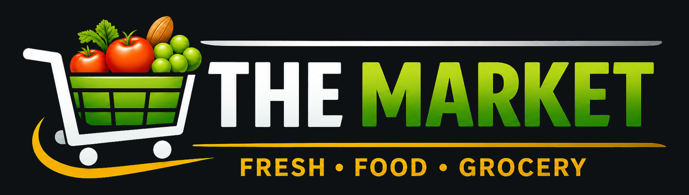
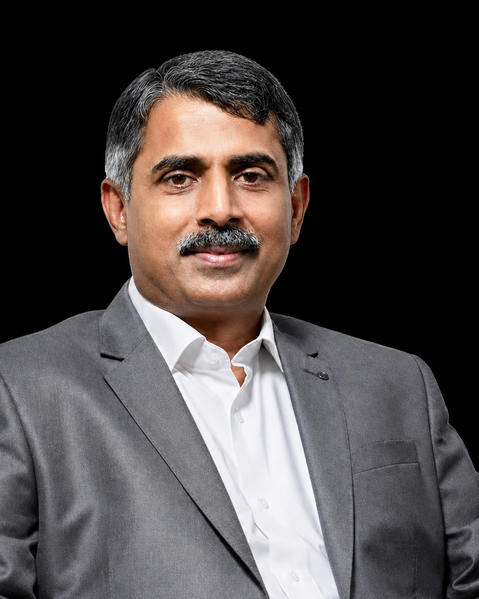
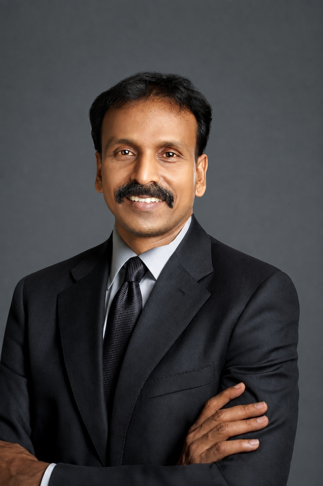

Premium supermarket chain planned across Kerala.
Strategic retail venture

THE MARKET
A transformational retail venture shaping the future of modern supermarket excellence in Kerala.
The Market is a flagship retail initiative of Vestano, envisioned to transform the supermarket landscape in Kerala through modern retail excellence, advanced operational systems, and an unwavering commitment to customer satisfaction. With a strategic expansion roadmap, the venture aims to establish a strong and trusted presence across the state.
Expansion Roadmap
100
Strategically located outlets planned across Kerala, beginning with the flagship launch in Chalakudy.
Venture Overview
Built to Redefine the Premium Supermarket Experience
The Market is positioned to become a trusted retail destination by combining curated quality products, modern infrastructure, advanced retail technologies, and customer-centric service excellence. Its operating model is designed around convenience, reliability, process strength, and consistent brand standards across every future outlet.
The first outlet will launch as the venture's flagship store.
Modern retail infrastructure designed for premium operations.
Integrated systems supporting convenience and control.
Visionary Leadership
Leadership Driving the Retail Transformation

Strategic Mentor
Mr. P. P. Sunny
Owner & Managing Director, Sunny Diamonds
The project is strategically guided and mentored by Mr. P. P. Sunny, the esteemed Owner and Managing Director of Sunny Diamonds. Renowned for entrepreneurial success, business acumen, and leadership excellence, Mr. P. P. Sunny brings invaluable expertise in business development, brand building, operational management, and strategic expansion.
His mentorship provides a strong foundation for The Market's long-term vision, ensuring that the venture is built on principles of excellence, innovation, and sustainable growth.

Founder
Sudheesh NIT
Founder, The Market
The Market is founded by Sudheesh NIT, a visionary entrepreneur committed to transforming the retail landscape of Kerala through innovation, quality, and customer-focused excellence. With a clear vision to build a modern supermarket chain, he aims to deliver superior shopping experiences that combine convenience, value, and trust. His dedication to strategic growth, operational excellence, and sustainable business practices forms the foundation of The Market, positioning it as a trusted retail destination for communities across the state.
Project Highlights
A Scalable Retail Model for Statewide Growth
Expansion Architecture
Establish the flagship operating model.
Build connected regional retail hubs.
Scale a consistent statewide brand.
- Premium supermarket chain planned across 100 key locations in Kerala.
- Flagship outlet launching in Chalakudy.
- Modern retail infrastructure designed to international standards.
- Curated selection of quality products and trusted brands.
- Technology-driven operations for enhanced customer convenience.
- Focus on operational efficiency, service excellence, and customer satisfaction.
- Scalable retail model designed for sustainable statewide expansion.
Vestano's Role
Strategic Retail Consultancy Partner
Vestano is entrusted with supporting the development and growth of The Market through comprehensive retail strategy, operating model design, technology alignment, and business transformation support.
Retail Strategy & Business Planning
Market Research & Feasibility Analysis
Store Design & Operational Planning
Technology & Process Integration
Growth & Expansion Strategy
Performance Optimization & Business Transformation
Through its specialized expertise in retail consulting and business transformation, Vestano is committed to supporting The Market in establishing itself as one of Kerala's most respected and successful supermarket brands.